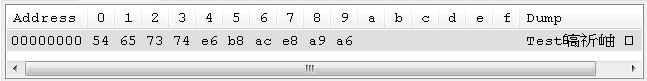
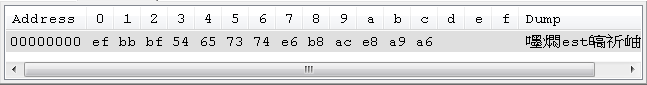
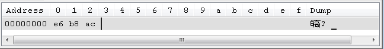
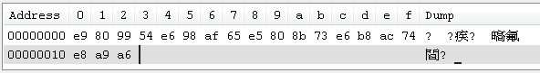

|
|
Unicode的實作之一，就是用兩個位元組來儲存所有字元，這在 Unicode 與 UTF 有看過例子，但很顯然的，對於英文字母這種ASCII所包含的字元，基本上只需要一個位元組就可以表達，使用UTF-16，則高位元組的部份基本上都是0，其實蠻耗費空間。 Unicode的實作方式之一 UTF-8（8-bit Unicode Transformation Format），使用可變長度位元組的方式來儲存字元，一個字元的儲存長度可從一個位元組到四個位元組。舉個例子來說，如果用UTF-8的方式儲存英文字 母，則只會使用一個位元組，如果儲存中文字，則會用三個位元組。例如在一個UTF-8中若同時儲存「Test測試」，則結果如下：  54、65、73、74分別是T、e、s、t四個字元的位元組資料，而e6、b8、ac則是「測」字元的三個位元組資料，e8、a9、a6則是「試」字元的三個位元組資料。 由於對ASCII字元，UTF-8仍是用一個位元組儲存，所以UTF-8對於原本就使用ASCII的系統來說，既有的資料並不用作什麼或很少修改，就可以與UTF-8一起使用，對於需要多國語系支援的系統來說，經常採用UTF-8作為預設方案。 要注意的是，如果你使用Windows記事本儲存時，選項採用「UTF-8」，則記事本會在檔案開頭置入EF、BB、BF三個位元組，作為 位元組順序記號（Byte-Order Mark，BOM），表示這是一個UTF-8編碼檔案。如果用可檢視十六進位的編輯器來看，就可以看到：  Unicode標準雖允許為UTF-8檔案標識BOM，但其實不需要，因為UTF-8沒有位元組順序問題，也不建議在UTF-8檔案標識BOM（只是為了標識這是一個UTF-8編碼檔案），而且對於許多沒有處理UTF-8檔案前的BOM的程式來說，會造成問題，例如若你儲存Java原始碼時使用Windows記事本存為「UTF-8」，則使 用javac編譯器時就會出問題，因為javac編譯器並不處理BOM，你必須改用儲存UTF-8時檔首無BOM的編譯器，javac才可以正確進行編 譯。 由於UTF-8採可變長度位元組來儲存字元，必須有個方式，識別位元組是否為ASCII字元，或者哪幾個位元組該視為一個字元的資料，基本規則可在 維基百科 UTF-8 說明中的「UTF-8編碼位元組含義」找到。 舉例來說，對於「測」這個字來說，用十六進位制來檢視：  第一個位元組為e6，二進位表示就是11100110，前三個位元都是1，第四位為0，表示這個位元組是非ASCII字元的第一個位元組，而且這個字元用 了三個位元組，所以接下來要讀入b8（10111000）與ac（10101100）兩個位元組，可以看到，接下來這兩個位元組的第一個位元是1，第二個 位元是0，各表示它們是非ASCII字元的位元組資料其中一個位元組。 下面這個範例是個簡單的UTF-8讀取程式： import java.io.*; 如果有個sample.txt儲存為檔首無BOM的UTF-8文件，內容為「這T是e個s測t試」，用上面這個程式讀取，結果會如下：
可以對照sample.txt的十六進位檢視結果：  |